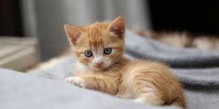

Suvita
O pisica cu blana tarcata si cateva fire albe care par sa-i lumineze fata. Este agila si mereu prima care ajunge la mancare.
Scama
Mica, pufoasa si cu un aer dezordonat, pare mereu ca tocmai s-a rostogolit prin praf. Este curioasa si urmareste orice miscare cu ochi mari.
Tigrila
Cu blana dungata ca a unui tigru in miniatura, are mereu o atitudine de lider. E protector cu fratii sai, dar adora sa fie alintat.
Moc
Cu o pata de blana pe bot care seamana cu o pata de noroi, are mereu o expresie amuzanta. Este relaxat si adora sa stea intins la soare.
Fulgusor
Alb ca zapada, este timid, dar devine prietenos daca simte ca e in siguranta.
Mustacila
Are mustati lungi si curioase care parca ii domina fata. Este jucaus si incearca sa prinda orice frunza sau fir de iarba care se misca.